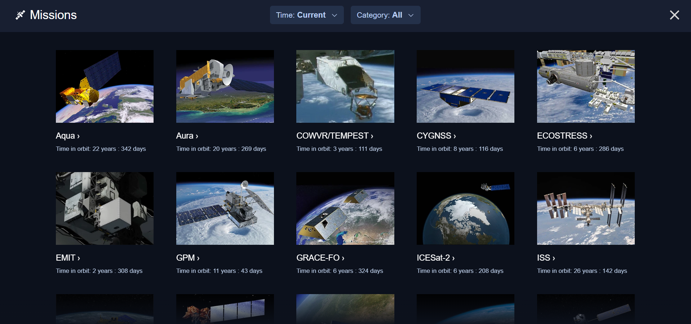
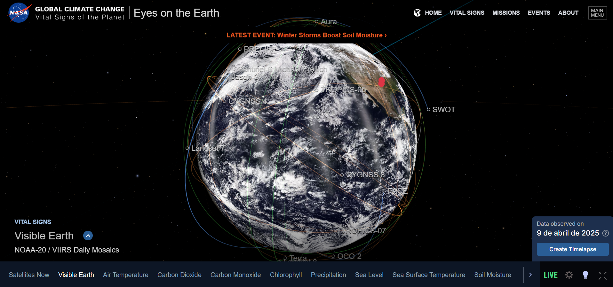
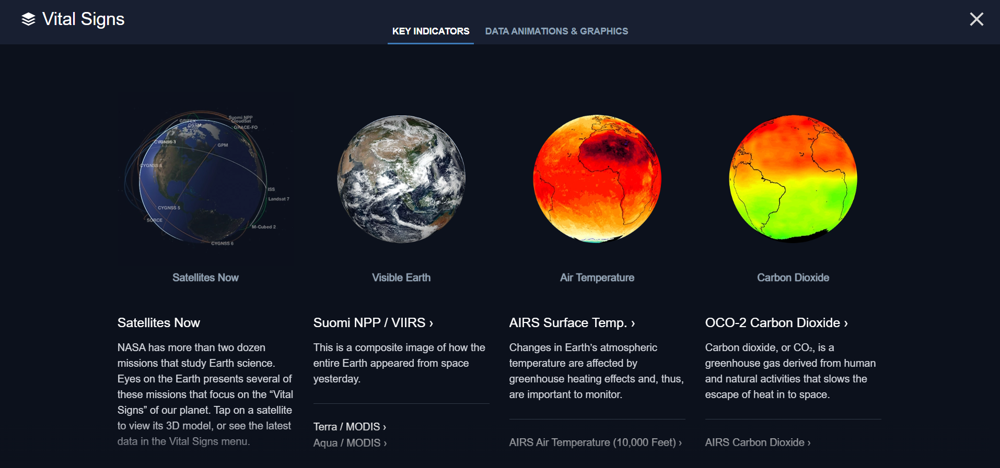
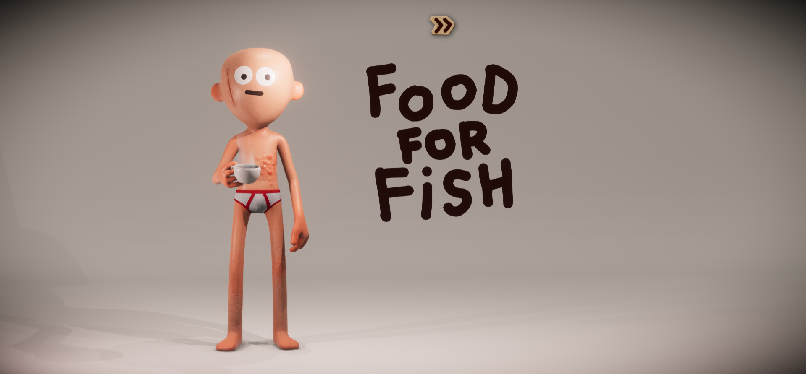
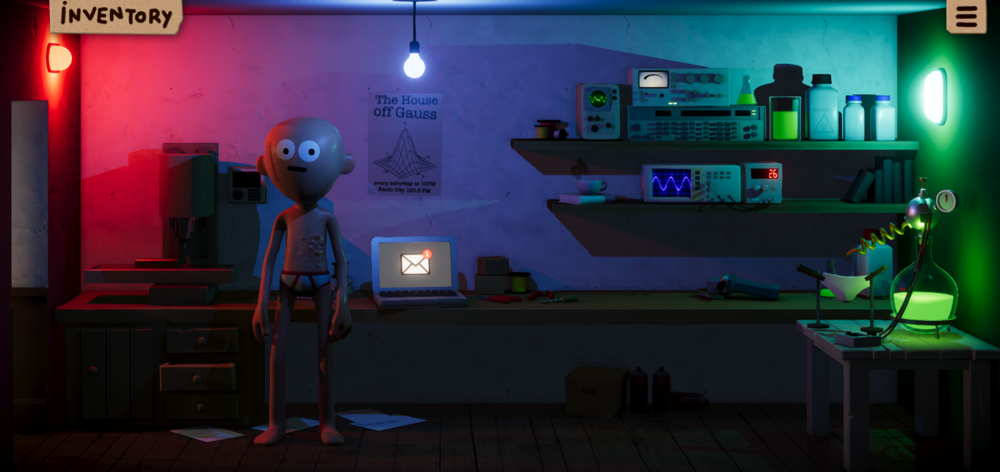
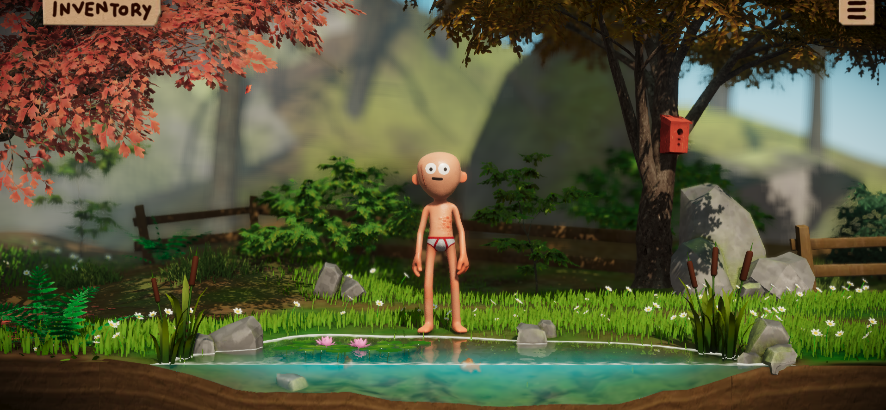
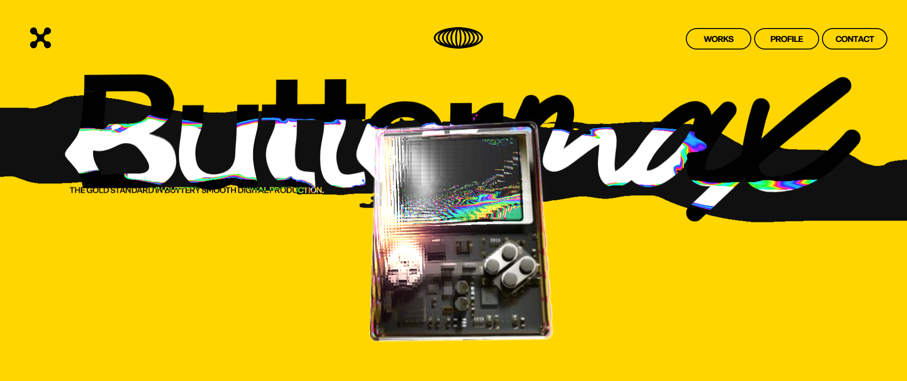
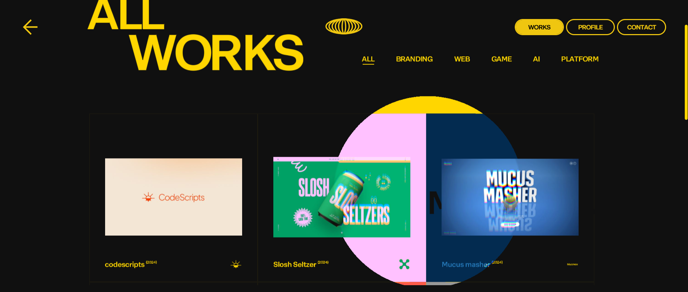
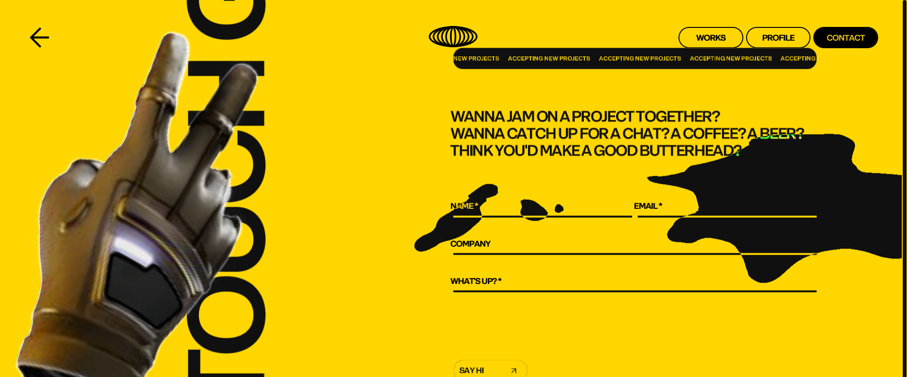

1. Awwwards – “Don't Board Me”
Breve explicación:
“Don't Board Me” fue elegido como Site of the Year Users' Choice en los Awwwards 2024. Es una plataforma que conecta a dueños de mascotas con cuidadores profesionales, destacando por su diseño encantador, ilustraciones adorables y una navegación muy cuidada.
Mi análisis y por qué lo destaco:
Me gustó mucho cómo este sitio consigue transmitir cercanía y confianza desde el primer momento. Usa microanimaciones suaves, una dirección de arte original y una estructura muy clara, todo con un estilo visual muy cálido. Lo considero un diseño destacado porque logra comunicar su mensaje de forma emocional y funcional al mismo tiempo, algo que no es fácil de conseguir. Es un gran ejemplo de cómo el diseño puede reforzar una marca y mejorar la experiencia del usuario.
2. Webby Awards – “NASA's Immersive Earth”
Breve explicación:
Este proyecto fue premiado en los Webby Awards 2024, en la categoría de Ciencia y Educación. Es un sitio interactivo que permite explorar nuestro planeta de manera visual y dinámica, usando datos científicos presentados de forma atractiva.
Mi análisis y por qué lo destaco:
Lo que más me impresionó de esta web es cómo convierte información científica compleja en algo comprensible y visualmente impactante. Tiene una interfaz clara, gráficos interactivos y una navegación muy intuitiva. Me parece un diseño destacado porque aprovecha el potencial de la web para educar de forma inmersiva, moderna y accesible. Demuestra que un diseño bien pensado puede hacer que temas complejos sean más cercanos a cualquier usuario.



3. FWA – “Food for Fish”
Breve explicación:
“Food for Fish” ganó el premio FWA of the Year 2024. Es un sitio con un enfoque narrativo que combina animaciones, efectos visuales y un diseño muy creativo para contar una historia de forma original y envolvente.
Mi análisis y por qué lo destaco:
Este sitio me pareció muy especial porque rompe con los esquemas clásicos de una web. Te cuenta una historia mientras navegas, y cada elemento está diseñado para formar parte de esa narrativa. Las animaciones y el ritmo visual te atrapan completamente. Lo considero un diseño destacado porque no solo informa, sino que entretiene, sorprende y se convierte en una experiencia en sí misma. Es un ejemplo de cómo el diseño puede usarse para emocionar, no solo para comunicar.



4. CSS Design Awards – “Buttermax”
Breve explicación:
“Buttermax” fue reconocido como Website of the Year 2024 por los CSS Design Awards. Su estilo limpio, moderno y profesional lo convierte en un ejemplo de buena práctica en diseño visual y experiencia de usuario.
Mi análisis y por qué lo destaco:
Lo que más valoro de este sitio es su equilibrio entre estética y funcionalidad. No tiene efectos llamativos ni elementos recargados, pero todo está tan bien cuidado que da gusto navegarlo. La tipografía, los colores y los espacios en blanco están perfectamente coordinados. Lo considero un diseño destacado porque demuestra que la simplicidad, cuando está bien ejecutada, puede ser poderosa y transmitir mucha confianza.



Conclusión personal
Cada uno de estos sitios representa un enfoque distinto del diseño web: emocional, educativo, narrativo y minimalista. Pero todos tienen algo en común: están diseñados pensando en el usuario y en cómo generar una experiencia significativa. Para mí, eso es lo que realmente define un diseño web destacado.